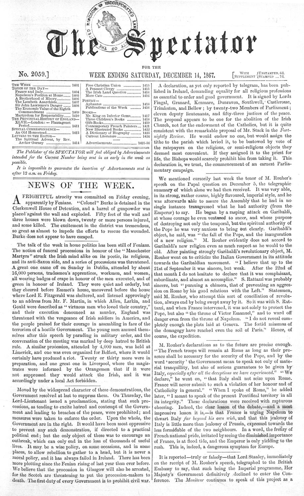

HN-208: Clerkenwell Prison blast and uncertain early arrests
HN-208 · December 16, 1867 · War, Conflict & Security > Terrorism & Political Violence > Bombings

page imageRecorded finding
Clerkenwell explosion December 1867 first-day dispatches published different fatality figures.
Discovery narrative
Source: Indianapolis Daily Herald, p. 1, London dispatches from December 14 — original page.
Report: Dispatches described the explosive breach of a wall at Clerkenwell Prison, destruction of nearby houses and rising casualties. They also reported Timothy Desmond, Jerry Allen, and Ann Justice being examined because they were near the scene and allegedly fled; the same report said nothing definite had been proved against them, and they were remanded. Commentators immediately attributed the outrage to Fenian activity.
Assessment: Catastrophe and preliminary judicial reports, sharply distinguishing the attack from unproved accusations against specific arrestees. Death figures varied even within the day's dispatches. Full inquiry open.
Curated audit flag
Class: Unverified lead (Q)
Recorded difference/concern: Clerkenwell explosion December 1867 first-day dispatches published different fatality figures.
Assessment: Manchester Guardian 14 December read; extract comparable numbers from another dated paper.
Source links: https://www.theguardian.com/theguardian/2010/dec/14/archive-fenians-blow-up-prison https://archive.spectator.co.uk/article/14th-december-1867/1/news-of-the-week https://dai.mun.ca/pdfs/morncourier/Courier18671225.pdf
Original archive images (3)
Authentic images retrieved from The Spectator Archive, Hoosier State Chronicles (Indiana State Library) and Memorial University of Newfoundland (Morning Courier). Article crops are located using the archive's own OCR word coordinates and rendered at native crop resolution; article clips are assembled from the archive's own article-block images; page images marked "archive tiles" are stitched from the archive's own tiled page service at its 256-px tile cap; page images marked "issue PDF" are single pages rasterised from the archive's own issue PDF, with the page chosen by matching the headline against the PDF's text layer; page scans are reduced-size access renditions. No images were generated, mocked, or retouched.

The Spectator Archive
Open larger view · Archive viewer (full resolution)

Hoosier State Chronicles (Indiana State Library)
Open larger view · Archive viewer (full resolution)

Memorial University of Newfoundland (Morning Courier)
Open larger view · Archive viewer (full resolution)
Source acquisition
Status: Archive images acquired
Authentic archive-owned image renditions were retrieved for this record and are displayed above. The source-acquisition manifest preserves the original pre-acquisition feasibility assessment.
Original seed
URL (preserved verbatim): https://newspapers.library.in.gov/?a=d&d=IDD18671216-01.1.1
Saved research report: Historical_Newspaper_Event_Research_203-227_2026-10-22.md
Evidence note: A newspaper report means a historical publication made a claim; it does not establish that claim as fact. Contemporary reporting is separated from later scholarly context and our own assessment.